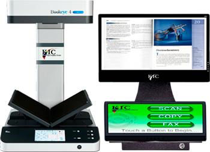

KIC Fleet Manager
monitor usage statistics at a glance
Control, update and monitor your KIC systems remotely. To better serve your patrons, it is important to know which KIC systems are used the most and at what times during the day and week, and which are used the least. All usage statistics can help you to determine the best KIC configuration for each site. And to make it easier to navigate from KIC to KIC system, KIC Fleet Manager allows you to select a particular KIC system via either of two methods: a map or a list.
With over ten years serving libraries, KIC is the most stable product available today. However, DLSG engineers incessantly work to improve KIC and support the growing changing digital world. DLSG offers improved software regularly, and in order to make it easier to deploy updates, KIC Fleet Manager lets you update KIC systems remotely. For example, a recently released feature lets you turn KIC systems on and off on demand or on a schedule set by a central control panel.

-
Small Floorstand
-

Dual Screen Tabletop
-
Single Screen Tabletop